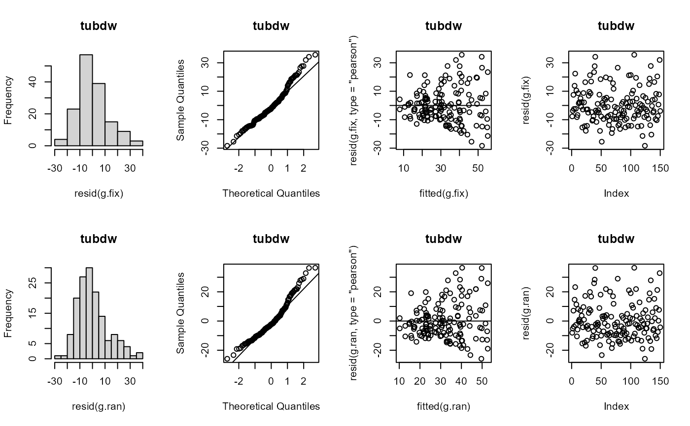

Heritability in plant breeding on a genotype difference basis
H2cal( data, trait, gen.name, rep.n, loc.n = 1, year.n = 1, loc.name = NULL, year.name = NULL, ran.model, fix.model, summary = FALSE, emmeans = FALSE, weights = NULL, plot_diag = FALSE, outliers.rm = FALSE, trial = NULL )
| data | Experimental design data frame with the factors and traits. |
|---|---|
| trait | Name of the trait. |
| gen.name | Name of the genotypes. |
| rep.n | Number of replications in the experiment. |
| loc.n | Number of locations (default = 1). See details. |
| year.n | Number of years (default = 1). See details. |
| loc.name | Name of the location (default = NULL). See details. |
| year.name | Name of the years (default = NULL). See details. |
| ran.model | The random effects in the model. See examples. |
| fix.model | The fixed effects in the model. See examples. |
| summary | Print summary from random model (default = FALSE). |
| emmeans | Use emmeans for calculate the BLUEs (default = FALSE). |
| weights | an optional vector of ‘prior weights’ to be used in the fitting process (default = NULL). |
| plot_diag | Show diagnostic plots (default = FALSE). |
| outliers.rm | Remove outliers (default = FALSE). See references. |
| trial | Name of the trial in the results (default = NULL). |
list
The function allows to made the calculation for individual or multi-environmental trials (MET) using th fixed and random model.
1. The variance components.
2. Heritability under three approaches: Standard, Cullis and Piepho.
3. Best Linear Unbiased Predictors (BLUPs).
4. Best Linear Unbiased Estimators (BLUEs).
5. Outliers remove.
For individual experiments is necessary provide the trait,
gen.name, rep.n.
For MET experiments you should loc.n and loc.name and/or
year.n and year.name according your experiment.
The blues calculation is based in the pairwise comparison and its could takes time according the number of the genotypes.
You can specify as blues = FALSE for calculate the variance components
and blups faster.
For more information review the references.
Schmidt, P., J. Hartung, J. Bennewitz, and H.P. Piepho. 2019. Heritability in Plant Breeding on a Genotype Difference Basis. Genetics 212(4).
Schmidt, P., J. Hartung, J. Rath, and H.P. Piepho. 2019. Estimating Broad Sense Heritability with Unbalanced Data from Agricultural Cultivar Trials. Crop Science 59(2).
Bernal Vasquez, Angela Maria, et al. “Outlier Detection Methods for Generalized Lattices: A Case Study on the Transition from ANOVA to REML.” Theoretical and Applied Genetics, vol. 129, no. 4, Apr. 2016.
Maria Belen Kistner
Flavio Lozano Isla
library(inti) dt <- potato hr <- H2cal(data = dt , trait = "tubdw" , gen.name = "geno" , rep.n = 5 , ran.model = "1 + (1|bloque) + (1|geno)" , fix.model = "0 + (1|bloque) + geno" , emmeans = TRUE , plot_diag = TRUE , outliers.rm = TRUE )hr$tabsmr#> # A tibble: 1 x 16 #> variable rep geno env year mean std min max V.g V.gxl V.gxy #> <chr> <dbl> <dbl> <dbl> <dbl> <dbl> <dbl> <dbl> <dbl> <dbl> <dbl> <dbl> #> 1 tubdw 5 15 1 1 31.7 12.1 11.6 53.2 130. 0 0 #> # ... with 4 more variables: V.e <dbl>, h2.s <dbl>, h2.c <dbl>, h2.p <dbl>hr$blues#> # A tibble: 15 x 6 #> geno tubdw SE df lower.CL upper.CL #> <fct> <dbl> <dbl> <dbl> <dbl> <dbl> #> 1 G01 28.5 4.33 85.3 19.9 37.1 #> 2 G02 19.7 4.33 85.3 11.1 28.3 #> 3 G03 38.3 4.33 85.3 29.7 46.9 #> 4 G04 39.2 4.33 85.3 30.6 47.8 #> 5 G05 39.2 4.33 85.3 30.5 47.8 #> 6 G06 11.6 4.33 85.3 3.02 20.2 #> 7 G07 19.4 4.33 85.3 10.7 28.0 #> 8 G08 20.7 4.33 85.3 12.1 29.4 #> 9 G09 50.2 4.33 85.3 41.6 58.8 #> 10 G10 28.2 4.33 85.3 19.6 36.8 #> 11 G11 43.3 4.33 85.3 34.7 51.9 #> 12 G12 32.6 4.33 85.3 24.0 41.2 #> 13 G13 20.9 4.33 85.3 12.3 29.5 #> 14 G14 30.7 4.33 85.3 22.1 39.4 #> 15 G15 53.2 4.33 85.3 44.5 61.8hr$blups#> # A tibble: 15 x 2 #> geno tubdw #> <chr> <dbl> #> 1 G01 28.9 #> 2 G02 21.1 #> 3 G03 37.6 #> 4 G04 38.3 #> 5 G05 38.3 #> 6 G06 13.9 #> 7 G07 20.8 #> 8 G08 22.0 #> 9 G09 48.1 #> 10 G10 28.6 #> 11 G11 42.0 #> 12 G12 32.5 #> 13 G13 22.2 #> 14 G14 30.9 #> 15 G15 50.7